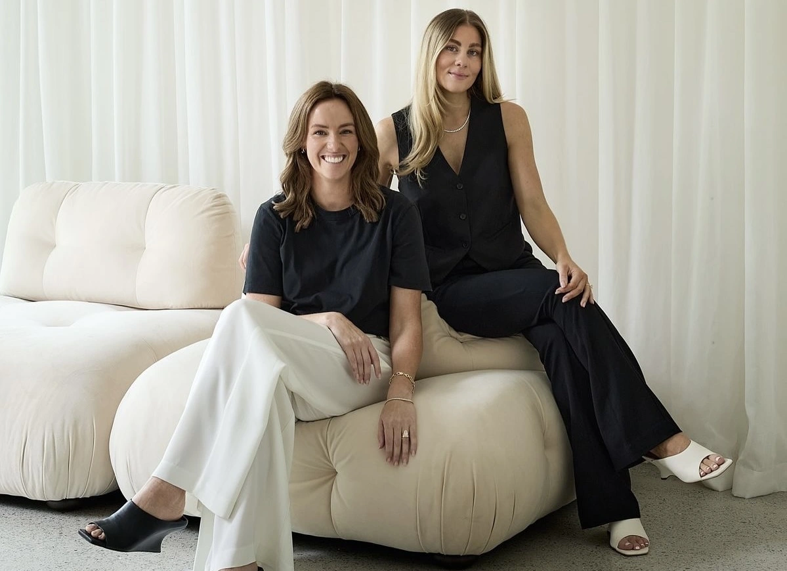

Om os
Vi tror på, at lyd kan være en del af din livsstil – ikke kun noget, der står i hjørnet derhjemme. Derfor skaber vi produkter, der kombinerer æstetik, kvalitet og funktionalitet i et harmonisk udtryk. Vores designs er minimalistiske, bløde og elegante, skabt til at passe ind i både din bolig og din taske.
Vores vision
Lumina stræber efter at forme produkter, der ikke kun spiller musik, men som forstærker stemninger, inspirerer til nærvær og bringer mere balance ind i livet.
Lumina Audio ønsker at være frontløber for æstetisk, bærbart lydudstyr, der gør det nemt at tage sin personlige atmosfære med sig overalt.
